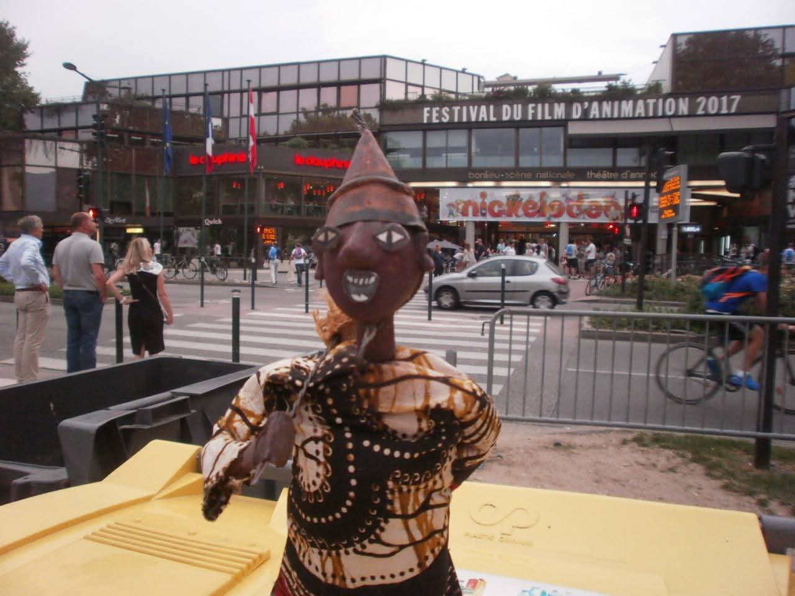
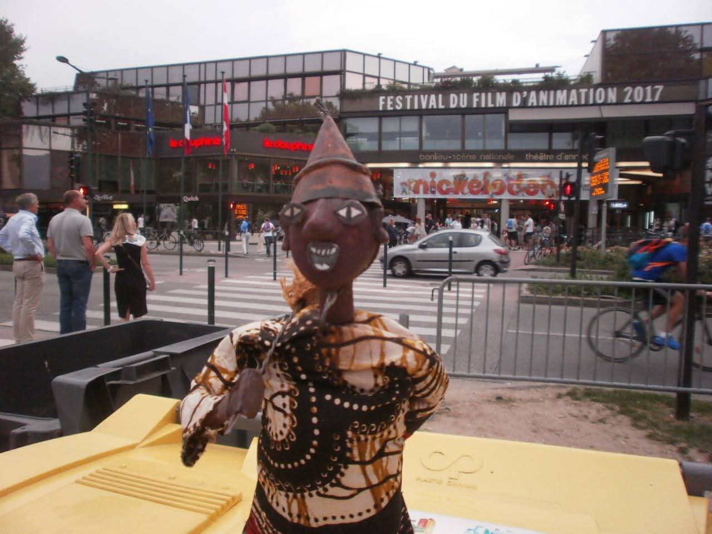

The Promise
Welcome to the creative universe of La Compagnie Afrik Denou, a space where storytelling, music, theater, and visual art come together to give life to powerful animated narratives inspired by African cultures and imagination.
This website invites you to discover our animated film project, a journey of images, sounds, and emotions that celebrates heritage, creativity, and the transmission of stories across generations.

More than a film, this project is a meeting point between artistic disciplines: storytelling, theater, music, and puppetry.
Enter the world of Afrik Denou — where stories move, voices resonate, and imagination becomes image.
Short Bio
I am Sie L. Pale from Burkina Faso. I am an artist, puppeteer, storyteller, and musician dedicated to bringing stories to life through movement, voice, and sound.
 
